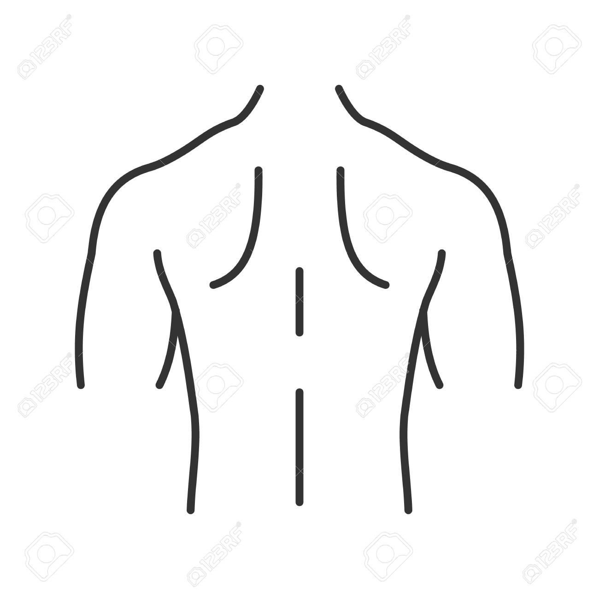
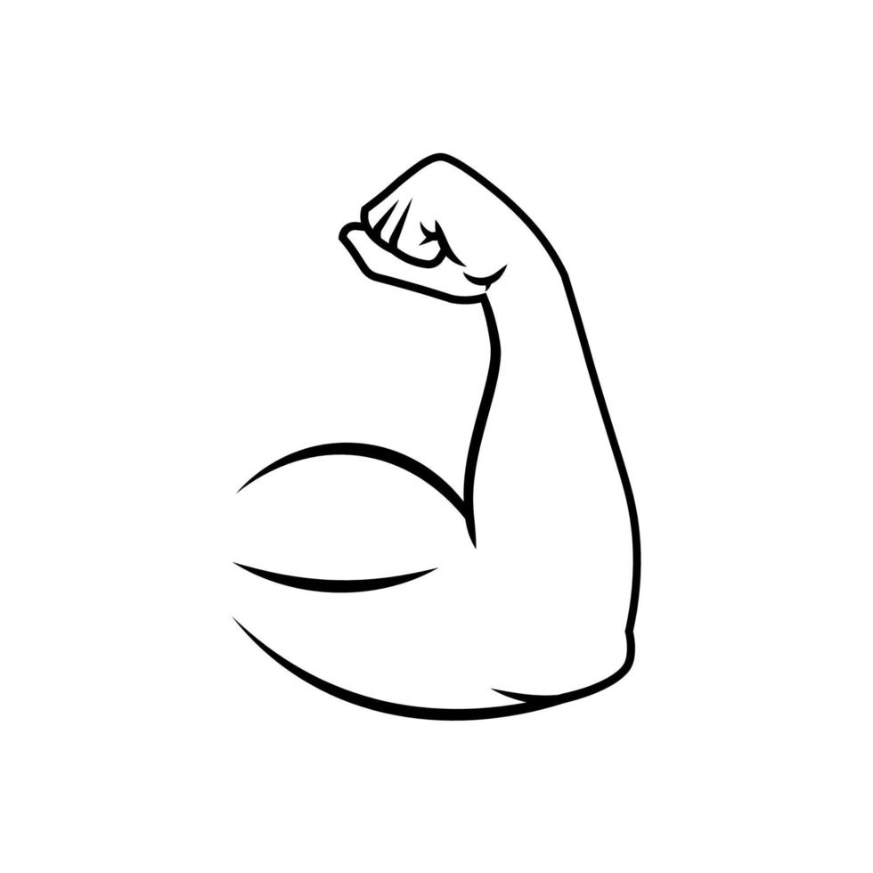
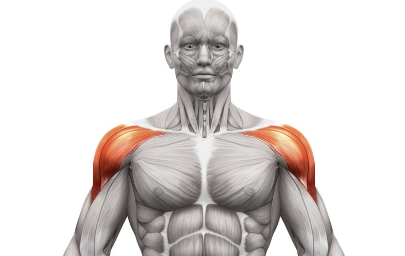
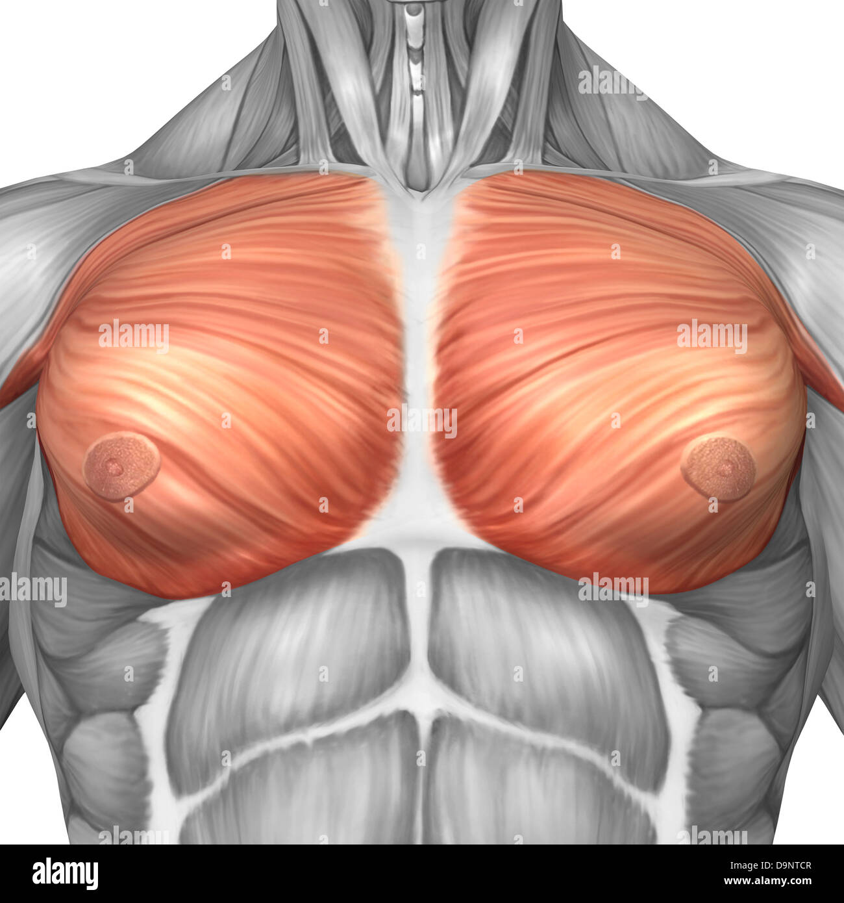
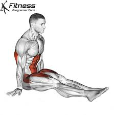
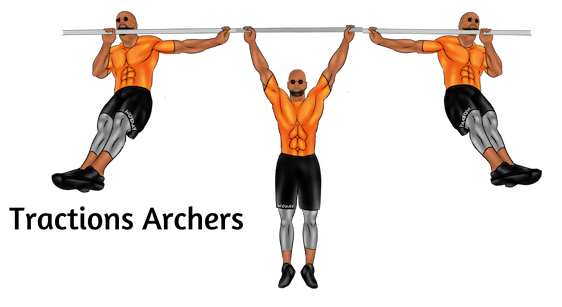
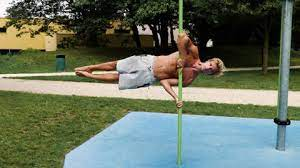
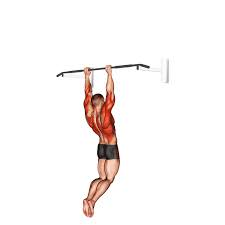
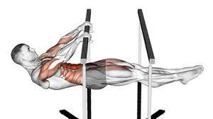
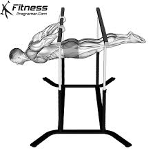

Echauffement en 3-4 étapes !
L'échauffement est très important, surtout si vous n'avez pas fait de sports depuis 3 jours. Je vous conseille un échauffement des épaules en premier lieu,en tournant une dizaine de fois les deux épaules (une par une) dans les deux sens. Ensuite échauffer le cou,puis les poignets: les joindre ensemble et effectuer des cercles, puis les mettre en main "zombie",ongles pointant vers la tete jusqu'à ce que ça tire. Puis échauffer le dos si vous comptez forcer un peu pendant la séance.
Dos
-
Tirée verticale
- Toutes les machines assistés où on prend en hauteur à deux bras,et on ramène à hauteur de pecs.
- Tractions, bras écartés, dos de la main vers soi (possible lestée).
-
Tirée horizontale
- Les machines assistés, en position de "rameur", où l'on ramene une barre verticale au niveau du ventre, attention au dos bien droit.
- Se mettre au sol en position de rameur,prendre une serviette ou un disque à bout de bras (commencer au niveau de la cheville),et utiliser la jambe (une après l'autre)comme résistance contre la serviette, mesurée votre force dans la jambe pour faire une répétition lente mais continue, ramener la serviette au niveau du genou à hauteur du ventre (recommandé).
-
Largeur du dos
- Prendre les poulies en hauteur, rien dans les mousquetons, chaque main prend la poulie opposés, se mettre au milieu du portique,dos droit, déplier les bras jusqu'a les tendrent en position de croix, puis revenir à bras croisés à hauteur de pecs,les avants bras se touchent, sentir le dos étirer les poids et pas les bras (poid légers !)
-
Bas du dos
- Debout, dos penché vers l'avant mais droit,une main posée sur le banc, prendre depuis le sol un poid, et le ramener à hauteur de hanche,coude pliée avec bras en L, bien ramené avec le dos et non le bras .
- Utiliser cette machine,bien fixée la hauteur pour etre calée au niveau des hanches,se pencher,prendre le poids,le coller à la poitrine,remonter avec le dos pour etre bien droit (pas trop remonter)
Bras
-
Curl
- Haltères,démarré paume vers soi,en haut tourner le poignet pour avoir phalange à l'exterieur,descendre,remonter, en haut tourner le poignet pour avoir paume vers soi, et ainsi de suite.
- Poulie 2 bras, prendre une barre, se mettre dos à la poulie (le cable entre les jambes),curler.
- machine assisté de curls (moins bien).
-
Tractions
- Tractions la paume vers soi.
-
Triceps poulie
- Prendre la corde à deux boules sur la poulie,tirer vers le bas sans que les bras bougent. Variante avec une barre à la poulie.
- Prendre chaque poulies avec le bras opposés (rien ds les mousquetons), se mettre centre du portique,et étendre les triceps vers le bas en synchronisation, revenir en bras croisés à hauteur pecs, coudes bougent pas.
- Prendre une poulie en hauteur (rien dans mousqueton),se mettre dos à la poulie,mettre le coude à hauteur de cou,soutenir son coude puis étendre le bras à fond.
-
Triceps PdC
- Dips, alternative lesté.
- Dips en s'asseyant au sol,placé une hauteur derrière sois (steps,chaise),mettre les mains sur la hauteur, doigts vers sois, puis dips.
Epaules
-
Poussés horizontale
- Machines assisté poussant vers le haut (poignés à hauteur d'épaules)
- Barre DC assisté à lever, en mettant fauteuil 90°
- Dévellopé militaire en poids libres avec fauteuil 75°
-
Elevation latérales
- Poulie 1 bras, se penché dans le sens du cable, et ramener bras tendu la main à hauteur du cable dans la longueur du corps
- Poulie 1 bras,dos à la poulie,bras dans la longueur du cable,ramener bras tendu à hauteur d'épaules (un peu un salut...)
-
Elevation synchronisés
- poid libre (légers),debout, soulevé le poids jusqu'à hauteur d'épaules, avec le coude plus haut que le poignet,bras en forme de L
- Poulie du bas,2 bras,prendre une barre et debout,ramener la barre à hauteur de pecs, avec les mains de façon à voir sa montre
Pecs
-
Haut pecs
- Machines assistés poussant horizontalement (poignés à hauteur d'épaules).
- DC assisté ou non, en mettant fauteuil incliné à 15°.
- Dévellopé en poids libres avec fauteuil 15° (encore mieux).
- Pompes avec les pieds surélevés (mais pas trop,moins d'80 cm).
- 2 Poulies en haut,mettre des poignés ds mousquetons,se placer au milieu un peu avancé par rapport au portique,mouvement de calin pr les bras, qui finissent presque étendue.
-
Bas pecs
- Pompes normales, pompes avec les pieds plus bas que corps.
- Poulies du bas à 2 bras,pareils que pour haut du pecs, mais la fin essayer de "croiser" les poignets
- Dévellopé Couché normale ou/et avec poid libres allongé sur un banc (à 0°)
-
Milieu de pecs
- Allongé sur un banc plat (0°),poids libres ds chaque main,mettre les bras en croix, avec mains à hauteur de pecs, et ramener en mode pec fly/calin devant soi, sans non plus étendre les bras, mouvement avec poids moyen et bras quasi étendues
- Poulie du milieu,2 bras,mettre un banc au milieu du portique,s'allonger et ramener bras quasi étendu les poulies en croisant les bras à la fin du mouvement (avant bras doivent se toucher)
- Pompes en archer
Calisthenie
Voici différentes figures de calisthenie, classées du plus facile au plus dur, n'hésitez pas à me contacter pour plus de détails.
Poirier

L-sit

Traction archer

Dragonfly (coude du bas bien dans les côtes)

Muscle up

Front-lever

Back-lever
Archer muscle up
Début d'archer, barre au dessus du pec, puis on revient au milieu tout en restant la haut